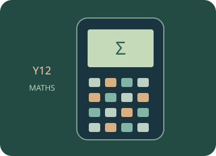

Statistics and probability
Work with lists, regression, distributions and statistical procedures.
Start with the mathematical explanations and worked examples below, then choose a guided calculator exercise. The trainer highlights the next physical key; afterwards, repeat in free practice and interpret your result.

Build the idea, one step at a time.
Statistics describes and draws conclusions from data. A variable records a characteristic, a population is the group of interest and a sample is a subset observed. A mean measures one kind of centre; a standard deviation describes spread. Neither captures every feature of a distribution.
Choose a method suited to the variable and model. Sample and population standard deviations answer different questions. A probability model requires assumptions, such as independent trials and constant success probability for a binomial count. A p-value describes compatibility with a specified null model; it is not the probability that the null hypothesis is true.
01 · Describe data before fitting a model
A data summary should describe centre, spread and shape, and consider unusual values. A mean uses every value; a median uses ordered position. A population standard deviation describes the whole listed population, while a sample estimate uses a different convention.
02 · Match the probability model to the experiment
A binomial model counts successes in a fixed number of independent trials with constant success probability. A normal model is continuous and uses a mean and standard deviation. A calculator distribution command does not establish whether the assumptions are appropriate.
03 · Use regression without inventing causation
Regression models association between variables and can support prediction within an appropriate range. Residuals compare observations with model predictions. Correlation alone does not establish cause; a strong fit can still reflect confounding, selection or a limited data range.
04 · Interpret inference in the stated model
A p-value is a probability, under a null model, of data at least as incompatible in the chosen test direction. It is not the probability that the null is true. A frequentist confidence procedure is assessed by repeated-sampling coverage, not by assigning a probability to a fixed parameter after observing one interval.
You can read these explanations without operating the simulator. The practical activities, games and revision below let you apply the ideas and check your reasoning.
Now investigate →Use the calculator, one key at a time.
Loading the calculator exercises…
Related manual procedures
The source trainer contains 42 skill pages. Reviewed procedures and outlines awaiting physical-device verification are labelled separately. A guided simulator example does not certify every menu on a physical calculator.
Practise, then explain.
Predict the result, follow the highlighted keys and interpret the calculator’s answer. This is practice: calculator actions are not sent to the teacher dashboard. These calculator activities support the examples and explanations in your class lessons.
Open the free calculator →